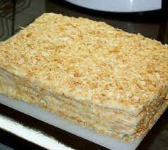
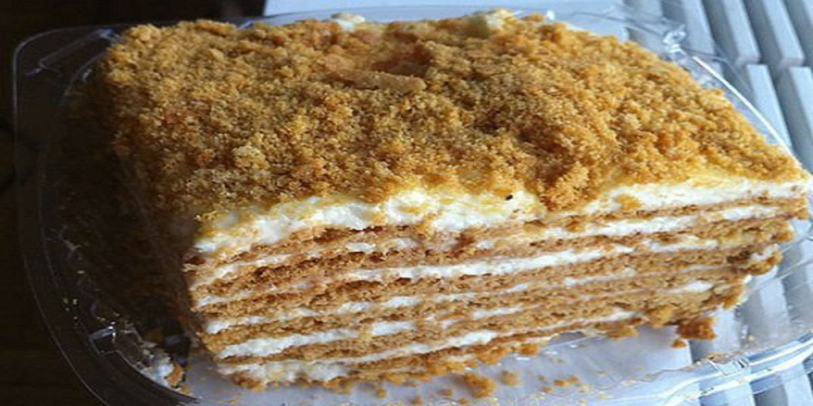
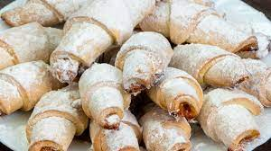
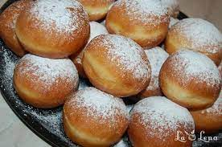
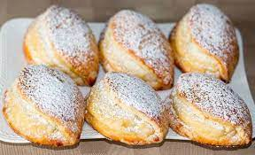

Copturi
Torta Napoleon

- 600g făină
- 300g margarină
- 1 păhar apă rece
- 1 lingură oțet
- 1 litru lapte
- 1 păhar zahăr
- 6 gălbenușuri
- 1 plic zahăr vanilat
- 250g margarină
Ingridiente:
Pentru aluat
Pentru cremă
Mod de preparare:
- Amestecăm bine ingredientele (înafară de margarină). Framântăm aluatul până obținem o cocă netedă. Îl întindem de grosimea 2 mm. Margarina o împărțim în 3 părți și cu una din ele ungem turta întinsă.
- Turta unsa cu o parte din margarină o împăturim în 3 părți, o înfășurăm în pelicula alimentară și o punem in frigider pe o ora. Această procedură cu margarină o repetăm de 3 ori. Înainte de a aplica următoarea parte a margarinei, aluatul scos din frigider îl întindem de fiecare dată, îl ungem iarăşi cu margarină şi iaraşi îl punem la rece pe 1 ora.
- Peste 3 ore aluatul este gata pentru a-l coace. Foaia scoasă din frigider o întindem subțire (1 mm) și îi dăm forma dorită. Timp - coacere a foii este de 25-30 min., 170-180 grade. Nu atingem foile în timpul coacerii.
- Din 1 litru de lapte luăm 1 păhar și amestecăm cu făină (câte puțin). Gălbenușurile le batem cu zahărul. Restul laptelui (750 ml) îl punem în ceaun la fiert. Când laptele e călduț, adăugăm compoziția (lapte + făină) câte puțin și continuăm să mestecăm. Când compoziția începe a se îngroșa, adăugăm și gălbenușurile bătute, zahărul vanilat. Când începe compoziția a fierbe, adăugăm untul de temperatura camerei, amestecând mai forțat, încontinuu și stingem focul. Ridicăm ceaunul de pe foc, lăsăm 2 minute să se răcorească și direct pe cremă punem pelicula alimentară. Lăsăm crema să se răcească. După ce crema s-a răcit, o batem vreo 3-5 min cu mixerul.
Torta Smântânel

- 500g smântână
- 500g zahăr
- 1kg făină
- 2 lingurițe bicarbonat de sodiu
- 1 plic zahăr vanilat
- 1,200kg smântână
- 500g zahăr
- nucușoare tocate la dorință
Ingridiente:
Pentru aluat
Pentru cremă
Mod de preparare:
- Amestecăm într-un vas smântâna cu zahărul până ce zahărul se va omogeniza. Adăugăm oul bătut și zahărul vanilat.
- Amestecăm compoziția, adăugăm bicarbonat de sodiu, după care punem treptat făina. Aluatul trebuie să fie moale și să se lipească puțin de mâni. În așa fel, foile vor fi moi și puhave.
- Pentru a modela foile, vom avea nevoie de hârtie de copt. Presurăm pe hârtie făină ( aproximativ o mână de făină pentru a ne fi mai ușor să căcelim foaia) și o întindem cu citorul cât de subțire posibil. Deasupra foii, la fel presurăm făină.
- Punem foaia în cuprorul supraâncălzit la 180C, aproximativ 5 min. Foaia nu trebuie să fie rumenă. Ea trebuie să fie albă, dar crescută. La fel procedăm cu restul foilor. Dăm formă foilor după ce le scoatem din cuptor (fierbinți), atât timp cât sunt moi. Mărimea foii - 23 cm. Cu o perie, înlăturăm făina rămasă.
- Batem îngredientele pentru cremă.
- Ungem foile generos cu cremă. Între straturi punem vișine, căpșune, miez de nuci sau orice fruct la dorință. Se poate și fără fructe. Incorporăm tortul.
- Decorul îl facem la dorință și după imaginația noastră.
Torta Diplomat

- 5 gălbenușuri
- 180 g zahăr
- 2 pliculețe zahăr vanilat (20 g)
- 500 ml lapte
- 9 foițe gelatină sau 15 g gelatină granule
- 250 g smântână pentru frișcă
- 1, 2 portocale
- 1, 2 banane
- 1 cutie compot de ananas (rondele)
- 1, 2 kiwi, foarte bine coapte
- 200 g pișcoturi de sampanie
Ingridiente:
Mod de preparare:
- Se pune gelatină la înmuiat în apă rece (dacă folosiți foițe de gelatină, le puneți în multă apă rece; dacă folosiți gelatina granule, puneți doar atâta apă cât să treacă cu două degete peste ele). Se lasă, în ambele cazuri, să se înmoaie cca. 10 minute, timp în care se prepară crema.
- Se pregătește prima dată baia de aburi, celebra bain-marie, punând un vas, plin pe jumatate cu apă, la fiert. Când apa clocotește, se dă focul la minim.
- Se freacă galbenușurile cu zahărul într-un bol mic și adânc până ce se albesc (cca. 2-3 minute). Se incalzește laptele și se toarnă peste compoziția spumoasă de gălbenușuri; se transferă apoi compoziția într-un alt vas, mai mic, care să intre perfect în vasul cu apa clocotită de pe foc (fundul vasului în care ați pus compoziția nu are voie să atingă apa de dedesubt). Se lasă la bain-marie timp de aproximativ 10 minute, timp în care se amestecă des (mai mult spre finalul fierberii). Compoziția va fi destul de lichidă chiar și la final, așa că nu vă speriați!!!
- La sfârșit, crema se dă deoparte și se adaugă foițele de gelatină înmuiate și bine scurse sau gelatina granule, care e posibil să fi absorbit toată apa și care nu se mai scurge ci se pune asa cum e. Se amestecă bine compoziția cu țelul, după care se lasă la răcit. Dacă vreți să grăbiți întregul proces de răcire, scufundați fundul vasului într-un altul cu apă rece (aveți grijă să nu ajungă apa în cremă).
- Se bate apoi frișca cu zahărul vanilat sau esența de vanilie și se încorporează în compoziția rece. Crema se ține la frigider până când se pregatesc forma și fructele.
- Se umezește și se tapetează cu folie transparentă o formă de tort rotundă cu diam. de 26 cm (dacă forma e uda, folia se așează foarte ușor).
- Se pregătesc fructele: portocalele se feliază pe lățime, obținând niște rondele frumoase și subțiri, și abia apoi se curăță de coajă; kiwi la fel, iar bananele se taie în felii subțiri care se stropesc cu zeama de lamâie, pentru a nu se înnegri (se oxidează repede). Pereții și fundul formei se îmbracă in felii de ananas, kiwi, banane și portocale (aici intră în scenă imaginația proprie 😛 ). Totuși, trebuie reținut faptul că kiwi proaspăt (și ananasul proaspăt) conține o enzimă care distruge gelatina, astfel încât vă recomand sa folosiți kiwi-ul numai pe margini sau să îl opăriți înainte (în puțină apă clocotită cu zahăr, ca la compot). Fructele din conservă sunt însa binevenite 🙂.
- Se toarnă jumatate din compoziția răcită peste fructe și se nivelează (vedeți și în poze că crema este încă lichidă, dar se va întări după ce stă la frigider).
- Se presară felii subțiri de banană sau bucățele de ananas. Tortul se ține cca. 12-15 minute la frigider, ca să se închege puțin compoziția.
- Se scoate apoi de la rece și se toarnă restul de cremă (ținută la temperatura camerei) deasupra, peste fructe. Ușor, fără grabă, în așa fel încât să acopere treptat fructele. Nu vă stresați dacă totuși feliile de fructe încep să “danseze” 😀 Nu e deloc important că fug din loc. Când crema se incheagă, nici nu se va observa acest lucru, iar gustul tot minunat va fi!!!
- La final, se aseaza un strat de piscoturi (pe care le insiropați cu suc de ananas din conservă) pe toată suprafața tortului, apasând ușor.
- Se acoperă forma cu folie și se lasă la frigider peste noapte, NEAPĂRAT peste noapte, ca să nu aveți surprize! A doua zi, se răstoarnă cu grijă pe platoul de servit (nu uitați să desprindeți folia transparentă)
- Se poate orna și cu frișca bătută.
Biscuiți Cornișoare

- 200 ml smântână de casă
- 150 gr unt (untură) topit la aburi
- 1 linguriță praf de copt
- 1 linguriţă zahăr vanilat
- făină cât cuprinde
- Dulceaţă din orice fructe
- Dulceaţă din petale de trandafir
- Miezul de nuci îl adăugăm în dulceaţă, în special, din prune.
Ingridiente:
Pentru aluat
Pentru umplutură
Mod de preparare:
- Amestecăm toate ingredientele de temperatura camerei astfel, încât să obținem o cocă moale. Împărțim aluatul în 3 părți, facem bile și îl punem la rece, acoperit pe 30 min.
- Întindem bila cu citorul dându-i mărimea dorită (2-3 mlm). Foaia întinsă o divizăm în 8 părți egale și punem umplutură la dorință.
- Le punem în tava tapetată cu hârtie.
- Le coacem în cuptorul înfierbântat din timp, la 180 grade, până se rumenesc frumos. După ce le scoatem din cuptor, le pudram fierbinți.
Biscuiți Gogoși puhavi

- 270 ml lapte
- 60 g zahăr
- 25 g drojdie proaspată
- 2 buc galbenușuri de ou
- 1 lingură coniac/brendy optional
- 1 buc esență de vanilie
- 0.25 lingurițe sare
- 45 g unt moale la temperatura camerei
- 500 g făină albă calitate superioară
- 1 l ulei de floarea soarelui pentru prăjit
- 2 linguri zahăr pudră plus daca vreți cu ceva să le umpleți - gem, etc.
Ingridiente:
Mod de preparare:
- Laptele cald se amestec cu zahărul și drojdia.
- Apoi se adaugă gălbenușurile, coniacul, vanilia și sarea - amestecați bine totul cu un țel.
- Adăugați untul, putin îl agitați și desfaceți.
- Și ultima este făina - amestecați bine aluatul cu un țel sau lingură.
- Aluatul astfel format îl treceți pe masa pudrată cu făină și îl frământați puțin până se uniformizeaza.
- Apoi îl puneți într-un bol. Acoperiti cu capac sau prosop și lăsați o oră să crească.
- În acest timp tăiați din hârtia de copt 20-30 de pătrate - cam 10x10cm - o să vedeți mai jos pt ce sunt.
- Dupa o oră aluatul crește.
- Îl tăiați în 20-30 de bucăți mici. Formați din ele bile uniforme și le puneți pe bucățile de hârtie tăiate mai sus. Lăsați o oră, acoperite cu prosop, să crească bine.
- Când trece timpul, turnați uleiul într-un ceaun sau tigaie adâncă, îl lăsați să se încingă. Luați atent câte o hârtie cu bila de aluat crescută și o răsturnați ușor în baia de ulei.
- Puneți prima gogoașă și după ea vedeți când adăugați urmatoarele - aici încă nu este timpul. Când începe să se rumenească și să facă spume puteți adăuga și alte gogoși, până au loc. Dați focul să fie mediu și le rumeniți bine pe ambele părți. Să aveți grijă pentru că se fac foarte repede.
- După ce se fac, le scoateți pe o farfurie așteruntă cu șervețele, să mai absoarbă din ulei.
- Le puteți umple cu gem sau crema preferată - aveți nevoie de o seringă specială de cofetărie ș-+i un pos.
Chifle dulci franceze Sochniki

- 300 g de făină
- 125 g de unt moale
- 1 ou
- 75 g de zahăr (3 linguri)
- 1/2 linguriță de praf de copt
- 1/3 linguriță de sare
- 60 g de smântână (2 linguri)
- 300 g de brânză de vaci (preferabil grasă și să nu fie umedă)
- 60 g de zahăr (2 linguri)
- 1 gălbenuș de ou
- 30-40 g de făină (1.5 linguri)
- 25-30 g de smântână (1 lingură)
- 1/2 linguriță de zahăr vanilat
- 1 gălbenuș de ou
- 1 linguriță de apă sau lapte
- zahăr pudră pentru presărare
Ingridiente:
Pentru aluat
Pentru umplutura
Pentru ungerea chiflelor:
Mod de preparare:
- Amestecați făina cu praful de copt.
- Frecați bine untul moale cu zahăr sau amestecați cu mixerul.
- Adăugați oul, sarea și smântâna în amestecul de unt și bateți cu mixerul până la omogenizare.
- Adăugați toată făina și frământați rapid aluatul (ca să nu se dezvolte glutenul și aluatul să nu fie prea dens).
- Dați aluatul la frigider pentru 1-1.5 ore.
- Trebuie să preparați umplutura cu 20 de minute înainte de a scoate aluatul din frigider.
- Amestecați toate ingredientele, cu excepția făinii și frecați bine cu furculița. Puteți amesteca cu mixerul, dar nu bateți. Nu trebuie să folosiți blenderul, deoarece umplutura va deveni lichidă. Dacă doriți ca umplutura să fie mai omogenă, atunci treceți brânza prin sită în prealabil sau dați-o prin mașina de tocat.
- Adăugați o lingură de făină și amestecați bine. Mai adăugați 0.5 lingură de făină, dacă este necesar.
- Umplutura este gata, lăsați-o să stea timp de 10-15 minute, ca să se dizolve zahărul.
- Tapetați tava cu hârtie de copt sau ungeți-o cu ulei. Încălziți cuptorul la 200 de grade.
- Împărțiți aluatul în 9 părți cu greutatea de aproximativ 67g.
- Presărați masa cu făină.
- Întindeți bucățile de aluat cu mâinile sau sucitorul sub formă de cerc sau oval cu grosimea de 0.5 cm și diametrul de aproximativ 11 cm. Puteți tăia marginile cu un cuțit pentru aluat.
- Puneți câte o lingură plină de umplutură (45-46 g) pe jumătate de aluat și acoperiți cu a doua jumătate de aluat.
- Mutați chiflele obținute pe tavă.
- Bateți gălbenușul cu apă sau lapte și ungeți aluatul și brânza.
- Coaceți chiflele timp de 25-30 de minute până se vor rumeni. Reduceți temperatura la 180 de grade după 15 minute de coacere.
- Lăsați sochniki să se răcească un pic și presărați-le deasupra cu zahăr pudră.